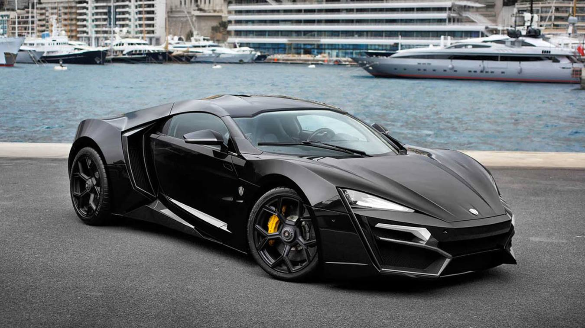

The 20 Most Amazing Cars Driven by Celebrities
by The 20 Most Amazing Cars Driven by Celebrities
Last Updated - 5 Days Ago

The majority of us have dreamed of having a luxury sports car, a set car or among these historic models that leave us breathless. We are going to show you, but these actors are able to although not all people might have the ability to attain these dreams! Don’t overlook #16, #13 and #1!
#20. Nicolas Cage -- Lamborghini Miura SVJ
Photo: Courtesy of Pinterest The Lamborghini Miura SVJ's history is strange. Constructed in the 1960’therefore, the Shah of Iran who possessed for twenty five decades purchased it. After the celebrity Nicholas Cage purchased it in 1997 he believed the mileage was very reduced. The motive for this? The Shah had didn and three million vehicles &rsquo.
#19. George Clooney -- Tango
Photo: Courtesy of Pinterest By purchasing this electric vehicle george Clooney is adopting an mindset that is eco-friendly. It's a model intended to be utilized by 1 individual, also is a version that is really exclusive. Less than one hundred cars annually are fabricated. Clooney is among those ones that are lucky!
#18. Flo Rida -- Tramontana XTR
Photo: Courtesy of Pinterest The Tramontana XTR is a Spanish supercar, a combination of a racing automobile along with a rocket. It can attain remarkable speeds (approximately 380 kilometers per hour) and is thought to be among the quickest cars on earth. Flo Rida, the rapper, is the proprietor of the monster.
#17. Wyclef Jean -- Pagani Zonda
Photo: Courtesy of Pinterest Among the most well-known rappers of the time and created in Haiti, Wyclef Jean, has just one popular hobby: collecting supercars. The most valuable thing in his group is that this red Pagani Zonda, made by an Italian firm and powered with a Mercedes engine, and its price was estimated in roughly 300k bucks. If you love classic cars, don’t overlook another one!
#16. Can I'm -- Custom 1958 VW Beetle
Photo: Courtesy of Pinterest The former member of this Black Eyed Peas, Will I Am, has a weakness for classic and antique automobiles, but he enjoys driving contemporary sport cars. His favourite one is his customized 1958 Volkswagen Beetle, using an impressive outer layout. Its price is about one million bucks.
#15. Jay Leno -- Gaz-21 Volga
Photo: Courtesy of Pinterest The Gaz-21 Volga is an automobile built around 1950 in Soviet Russia in the midst of the Cold War. It was really cheap and turned out to be a family car. The famous night show host, Jay Leno, possesses among the classic automobiles, one of many of his amazing collection! Just Some of these exist in North America!
#14. Adam Carolla -- Paul Newman’s Auto Collection
Photo: Courtesy of Pinterest Another renowned whose hobby is auto collecting, Adam Carolla became renowned in the 1990s while hosting a series called Loveline. He earned enough cash to purchase Paul Newman’s automobile collection. For instance, the set consisted among automobiles that were expensive. Carolla won a Toyota Grand Prix in Long Beach! He hosts a podcast called CarCast. You’ll never think how Cristiano Ronaldo’s automobile is!
#13. Cristiano Ronaldo -- Koenigsegg CCX
Photo: Courtesy of Pinterest Among the very best soccer players in the world, the Portuguese participant, Cristiano Ronaldo, includes a salary of about 17 million euros each year, and he uses a portion of his wages to purchase supercars such as the Koenigsegg CCX. Considered among the cars on the planet, it's also among the cars.
#12. Paris Hilton -- Bentley Continental
Photo: Courtesy of Pinterest Heiress to the resort series empire, Paris Hilton is the owner of a pink Bentley Continental customized by West Coast Customs. This model's purchase price is about bucks. Customizations, by way of instance, include the automobile being pink, either on the interior and the outside from diamonds.
#11. Jay Leno -- EcoJet
Photo: Courtesy of Pinterest We'll refer to Jay Leno, but this time we'll chat about his Eco-friendly automobile, called EcoJet. It's a supercar that runs only on bio-diesel. And, though the vehicle is Eco-friendly, it's speed and an wonderful performance!
#10. Justin Bieber -- Fisher Karma
Photo: Courtesy of Pinterest Among those contemporary hybrid automobiles, the Fisher Karma, constructed in 2012, was talented to Justin Bieber from the automobile maker because of his 18th birthday. As he didn & rsquo; t enjoy the colours, bieber had repainted, and the vehicle is chrome.
#9. Chris Harris -- Porsche 911
Photo: Courtesy of Pinterest Chris Harris became a part of this new team of the British TV series Best Gear at 2016. Before that, he was employed as a car-specialized journalist and wrote for many influential celebrities as Evo, Autocar, Jalopnik and PistonHeads. One of the cars that he drove in the series were a Porsche 911 Carrera Cup along with also a Jaguar E-Type.
#8. Jerry Seinfeld -- 1955 Porsche Spyder
Photo: Courtesy of Pinterest Vintage automobiles will be the enthusiasm of the renowned comic Jerry Seinfeld, and Porsche versions are his favorites. Jerry has a set whose value amounts to 15 million bucks approximately and among the most recognizable versions from his assortment is that this gloomy Porsche Spyder.
#7. Mike Tyson -- Lamborghini Diablo VT Roadster
Photo: Courtesy of Pinterest Among the most well-known fighters of and surrounded by controversies within his lifetime, Mike Tyson possessed an uncommon blue Lamborghini Diablo VT Roadster. He gave the vehicle to the Star Cars Museum after he went bankrupt. The Lamborghini is currently displayed among a number of different cars previously owned by actors, such as the Mercedes-Benz 500 SEL possessed by Michael Jackson.
#6. James Corden -- Range Rover Sport
Photo: Courtesy of Pinterest Most of us know James Corden, the sponsor of this The Late Late Show along with his section named Carpool Karaoke, where he picks up the greatest music stars from the world within this Range Rover Sport and pushes around while singing with all the greatest hits of their musicians together. Aside from the Range Rover, Corden has also pushed a Jaguar E-Type, a Mercedes Benz W108 along with also an Audi A8.
#5. Jay Leno -- 1909 Baker Electric
Photo: Courtesy of Pinterest Once more is Jay Leno. He possesses a ! When it was constructed, the car was so slow that it was quite affordable (approximately a million bucks ). Nowadays, and as a result of its historic importance, this vehicle is practically priceless!
#4. John Lennon -- Rolls Royce Phantom V
Photo: Courtesy of Pinterest This Unbelievable Rolls Royce was painted from the The Beatles‘ manhood, John Lennon. The entire world watched this car once the band showed up inside in the premiere of the film,Assist! The car is currently owned by the Canadian billionarie, Jim Pattison.
#3. Ralph Lauren -- McLaren F1 LM
Photo: Courtesy of Pinterest Among the most well-known designers in the world, Ralph Lauren, is the owner of a McLared F1 LM, among the fastest sport automobiles featured in this list. A license was demanded by Ralph Lauren, as the speed of the vehicle is 225 mph, to be utilised in the roads. Dollars needed to be payed from the designer to have this beauty.
#2. Idris Elba -- Bentley Continental GT Rate
Photo: Courtesy of Pinterest The famed British celebrity Idris Elbafamous for his part from the TV series The Wire, is also the host of a BBC series called King of Speed, where he travels across the planet testing automobiles. The most amazing cars which were driven by the celebrity will be the Ford Focus, the Jaguar XE along with also the Bentley Continental GT Speed that broke the land speed record of UK at 2015.
#1. David Beckham -- McLaren 12C Spider
Photo: Courtesy of Pinterest Another soccer player, and among the most well-known players of England, David Beckham is the owner of a McLaren 12C Spider. Much like the rest of the cars made by Frank Stephenson, designer of McLaren, this vehicle can be a piece of artwork. And although it's a sports car, it's among the cars on this list.
Leave a Comment:
Search
Advertisement